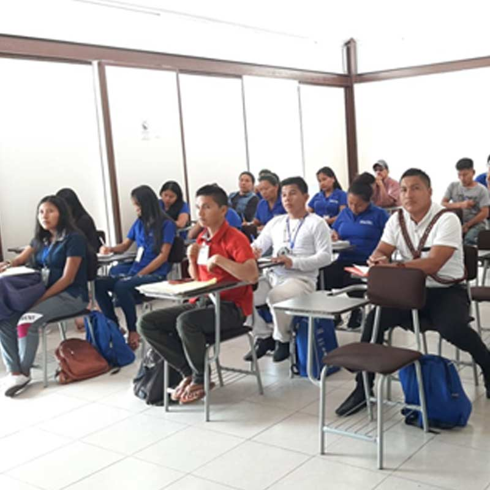
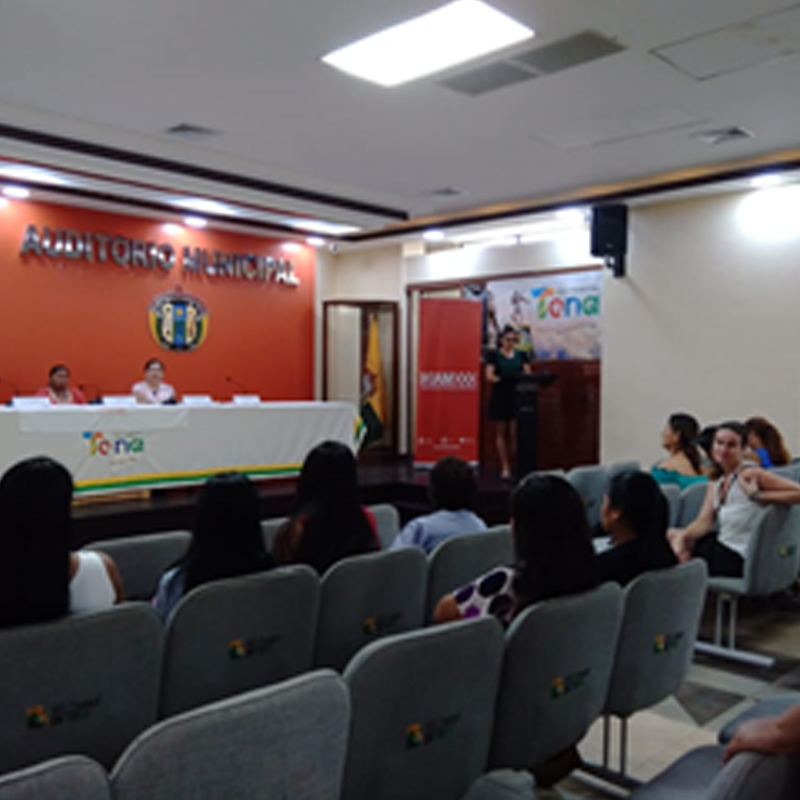
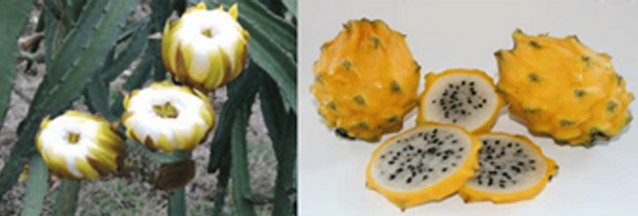

¡Bienvenidos a la Dirección de Vinculación con la Sociedad de la Universidad Regional Amazónica Ikiam!
Nuestra misión es promover el intercambio de conocimiento entre la Universidad y los distintos actores sociales, a través de programas y proyectos de ámbito académico e investigativo que generen respuestas a las problemáticas y desafíos del entorno.
Ámbitos de la gestión de vinculación:
La Dirección de Vinculación con la Sociedad- DVS realiza las siguientes gestiones:
- Prácticas pre-profesionales y pasantías
- Programas y proyectos de vinculación con la sociedad
- Educación continua
- Servicios de consultoría
- Gestión de redes con actores sociales
- Divulgación científica.
Prácticas pre-profesionales y pasantías
La DVS apoya a la gestión de estudiantes y docentes que desarrollan las prácticas pre profesionales en entornos institucionales o empresariales públicos o privados, nacionales o internacionales a partir de la gestión de convenios o acuerdos interinstitucionales.
Al momento Ikiam cuenta con los siguientes convenios de prácticas pre profesionales:
Programas y proyectos de vinculación con la sociedad
Educación Continua
La DVS se encuentra a cargo de la coordinación de propuestas de capacitación. La oferta de cursos de formación continua que Ikiam ha contado es la siguiente:
Cursos de capacitación de kichwa en la práctica en los niveles básico, intermedio e intermedio II
La Universidad Regional Amazónica Ikiam suscribió un convenio con la Escuela de Liderazgo Ambiental –ELA del Gobierno Provincial de Napo, para formación continua de curso de kichwa básico para docentes, estudiantes y personal administrativo de la universidad, el mismo que es dictado por la señora Silvia Huatatoca maestra kichwa y tendrá una duración del curso 48 horas entre los meses de junio, julio y agosto de 2020 y cuenta con 38 estudiantes.
Programa de Gobernanza Territorial Indígena

A través de la una alianza estratégica, la Universidad Regional Amazónica Ikiam, la Organización Forest Trends, la Confederación de Nacionalidades Indígenas de la Amazonía Ecuatoriana-CONFENIAE, y PROAmazonía, llevaron a cabo el “Programa de Formación en Gobernanza Territorial Indígena -PFGTI”, que tiene por objetivo contribuir al fortalecimiento de la gobernanza en territorios indígenas de la Amazonía ecuatoriana a través del desarrollo de capacidades requeridas por las comunidades, pueblos y nacionalidades indígenas.
El programa de formación tuvo una duración de 8 meses y estuvo dirigido a 36 estudiantes hombres, mujeres, jóvenes y adultos indígenas de las nacionalidades kichwa, waorani y shuar de las provincias de Napo, Pastaza, Sucumbíos y Morona Santiago que viven en sus territorios, con responsabilidad, interés y compromiso con sus comunidades asentadas en la región amazónica.
Desde septiembre de 2019 hasta marzo del 2020, se llevaron a cabo 6 módulos presenciales: a. Territorio y Globalización; b. Marco legal y Derechos; c. Desarrollo y Buen Vivir; d. Gobernanza Territorial; e. Género y generación; f. Planes de vida e instrumentos de gestión territorial; g. Manejo administrativo Financiero; h. Economía Indígena; i. Políticas públicas; j. Cambio climático y REDD+. Estos contenidos, se han encaminado al liderazgo solidario de los participantes para encontrar soluciones concretas a las problemáticas comunes en el territorio.
Servicios de consultoría
La DVS se encuentra a cargo de la coordinación de propuestas de consultorías, asesorías, y prestación de servicios de Ikiam.
Gestión de redes con actores sociales
Evento: “Mujer y ambiente sostenible”

El evento “Mujer y ambiente sostenible”, fue organizado por Ikiam y el Comité Provincial de los Derechos Humanos de las Mujeres de Napo y se desarrolló temas de importancia para la sociedad, el papel protagónico de las mujeres dentro de nuestra provincia, país y el mundo, así como también la mujer en el ámbito de la minería en la provincia de Napo. En este evento, aasistieron alrededor de 30 personas invitadas, integrantes de las organizaciones sociales agrupaciones interculturales, autoridades y público en general.
Evento: “Biocomercio y Agroecología con especial atención en la Guayusa y la Pitajaya como cultivos amazónicos de potencial económico”

Los principales objetivos de este evento, liderado por el docente Wilfredo Franco, fueron presentar temas marco y temas específicos en el ámbito agroecológico y de biocomercio, para analizar y generar una amplia discusión sobre los escenarios económicos en Napo y otras provincias amazónicas, en función de sus potencialidades en biodiversidad, producción y comercio de rubros no tradicionales, como son la pitahaya y la guayusa. Ambos productos incursionan en el mercado internacional con expectativas de incrementar significativamente su exportación en los próximos años.
El evento contó con una nutrida representación de las agro-asociaciones Kichwa de Napo, la cooperación internacional y funcionarios de ministerios, alcaldías y prefectura, así como estudiantes y docentes de Ikiam.
Divulgación científica
La Universidad Regional Amazónica Ikiam, fue participe de varias actividades dentro del “Festival Intercultural Chakra con Sabor a Chocolate”, evento realizado por la Prefectura de Napo, en donde se dio a conocer el desarrollo, la gestión, los avances de los programas y 14 proyectos de vinculación con lo sociedad así también los emprendimientos de los estudiantes:
- Educación y concientización en gestión de residuos orgánicos, reciclaje y la reducción de productos de un solo uso, dirigido a instituciones educativas del Tena.
- Monitoreo participativo de aves de la chakra e innovación en el emprendimiento con enfoque de biocomercio de la asociación de producción artesanal asoahuanowarmi.
- Biodigestores en la sociedad amazónica
- Creación de la unidad de identificación molecular de agentes infecciosos como apoyo médico científico al Hospital José María Velasco Ibarra” ubicado en la ciudad de Tena, Provincia de Napo, Ecuador.
- Plan Maestro sostenible para la repotenciación del equipamiento punta de Ahuano, parroquia Ahuano
- La meliponicultura en la comunidad porotoyacu: reproducción, prevención de enfermedades, recolección y buenas prácticas de manufactura en miel.
- en escuelas y colegios en áreas de ciencias de la tierra y medio ambiente en el contexto de Geoparque Napo Sumaco.
- Yacutarpu (sujeto a cambios) – hidropónicos.
- Efecto de los animales domésticos en las áreas protegidas y urbanas: integrando la ciencia ciudadana para fomentar la educación ambiental.
- Monitoreo hidrometeorológico en tiempo real de la zona de inundación del río tena.
- Fortalecimiento del sistema de producción artesanal de hongo comestible como alternativa de subsistencia para las comunidades indígenas establecidas en el Parque Nacional Sumaco Napo-Galeras, Ecuador.
- Programa de educación ambiental para la conservación de murciélagos del ecuador: núcleo Amazonía.
- Educación para la salud: prevención de enfermedades parasitarias para las comunidades de las zonas de amortiguamiento de la Reserva Colonso-Chalupas.
- Educando en vacunas, pequeñas dosis-grandes logros.
correo electrónico: vinculacion@ikiam.edu.ec
Teléfono de contacto: (06) 2999160 - (06) 3700040 ext. 295 – 298 – 297 y 296

Dirección de Vinculación con la Sociedad